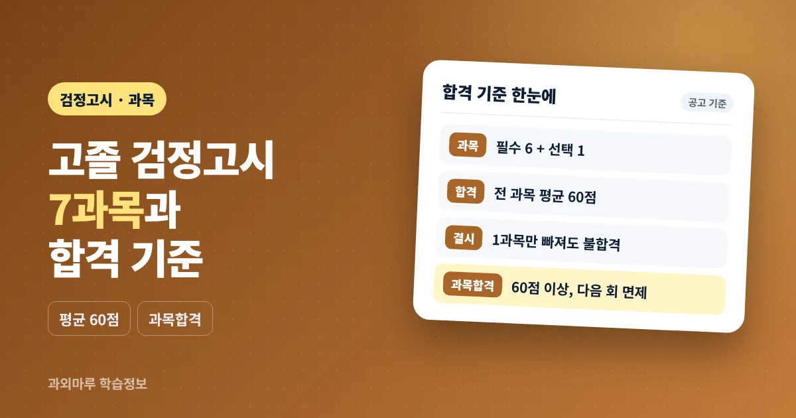

- 고졸 검정고시는 필수 6과목 + 선택 1과목 = 7과목, 객관식 4지선다
- 합격은 전 과목 평균 60점 이상 — 평균이 넘어도 결시 과목이 있으면 불합격
- 60점 이상 과목은 과목합격, 원하면 다음 회 면제하고 그 점수를 합산
고졸 검정고시 과목은 몇 개인가요?
고졸 검정고시는 필수 6과목과 선택 1과목, 모두 7과목을 봅니다. 선택 과목은 도덕·기술·가정·체육·음악·미술 가운데 하나를 원서 접수 때 고릅니다.
고졸 검정고시는 고등학교를 졸업하지 않은 사람이 고등학교 졸업 학력을 인정받기 위해 치르는 시험으로, 각 시·도교육청이 공고하고 시행합니다. 2026년도 제2회 경기도교육청 공고에 적힌 교과별 출제 대상 과목은 다음과 같습니다.
| 구분 | 시험 교과 | 출제 대상 과목 (2015 개정 교육과정) |
|---|---|---|
| 필수 | 국어 | 국어 |
| 필수 | 수학 | 수학 |
| 필수 | 영어 | 영어 |
| 필수 | 사회 | 통합사회 |
| 필수 | 과학 | 통합과학 |
| 필수 | 한국사 | 한국사 |
| 선택(1과목) | 도덕 / 기술·가정 / 체육 / 음악 / 미술 | 생활과 윤리 / 기술·가정 / 체육 / 음악 / 미술 |
사회는 '통합사회', 과학은 '통합과학'에서 출제된다는 점을 기억해 두면 교재를 고를 때 헷갈리지 않습니다. 도덕을 선택하면 '생활과 윤리' 과목에서 출제됩니다. 선택 과목은 접수 때 정하므로, 공고가 나오기 전에 어떤 과목이 자신에게 부담이 적은지 미리 교과서 목차를 훑어보고 정해 두는 것이 좋습니다.
검정고시 시간표는 어떻게 되나요?
고졸 검정고시는 하루에 7교시를 모두 치르며, 국어·수학·영어는 40분, 나머지 과목은 30분입니다. 1교시 응시자는 오전 8시 30분까지 시험실에 들어가야 합니다.
| 교시 | 과목 | 시간 | 시험 시간 |
|---|---|---|---|
| 1교시 | 국어 | 09:00~09:40 | 40분 |
| 2교시 | 수학 | 10:00~10:40 | 40분 |
| 3교시 | 영어 | 11:00~11:40 | 40분 |
| 4교시 | 사회 | 12:00~12:30 | 30분 |
| 점심 | — | 12:30~13:30 | — |
| 5교시 | 과학 | 13:40~14:10 | 30분 |
| 6교시 | 한국사 | 14:30~15:00 | 30분 |
| 7교시 | 선택 과목 | 15:20~15:50 | 30분 |
위 표는 경기도교육청 2026년도 제2회 공고의 고졸 시간표입니다. 2교시부터 응시하는 경우에는 해당 과목 시험 시작 10분 전까지 입실하면 되고, 원서 접수 때 신청한 장애인 응시자는 고졸 기준 과목당 10분씩 시험 시간이 연장됩니다. 공고에는 입실 시간이 응시자 유의사항 공고에서 바뀔 수 있다고 적혀 있으므로, 시험 전 시험장 공고를 다시 확인해 주세요.
시간표에서 눈여겨볼 점은 문항당 쓸 수 있는 시간입니다. 30분 과목은 한 문제에 오래 머무르기 어렵기 때문에, 기출문제를 풀 때부터 실제 시험 시간에 맞춰 시간을 재 보는 연습이 도움이 됩니다. 시험장에서는 전자시계를 지닐 수 없어 아날로그 손목시계를 준비하는 것이 좋습니다.
검정고시 몇 점이면 합격인가요?
각 과목 100점 만점으로 7과목 평균이 60점 이상이면 합격입니다. 다만 평균이 60점을 넘어도 한 과목이라도 결시하면 불합격 처리됩니다.
검정고시 합격 점수는 '과목별 점수'가 아니라 '전 과목 평균'으로 판단합니다. 공고의 합격 결정 기준에는 과목별 최저 점수(이른바 과락)가 따로 적혀 있지 않으므로, 점수가 낮은 과목이 있더라도 다른 과목에서 보완하면 평균으로 합격할 수 있습니다. 아래는 이해를 돕기 위한 계산 (예시)입니다.
| 과목 | A 응시자 (예시) | B 응시자 (예시) |
|---|---|---|
| 국어 | 72 | 80 |
| 수학 | 40 | 60 |
| 영어 | 48 | 64 |
| 사회 | 68 | 76 |
| 과학 | 60 | 72 |
| 한국사 | 76 | 결시 |
| 선택 | 80 | 84 |
| 결과 | 총점 444, 평균 약 63.4 → 합격 | 결시 과목이 있어 불합격 |
A 응시자는 수학·영어가 60점 아래여도 평균이 60점을 넘어 합격합니다. B 응시자는 응시한 과목 점수가 모두 높지만 한국사를 결시해 불합격입니다. 그래서 자신 없는 과목도 빠지지 않고 응시하는 것이 무엇보다 중요합니다. 시험은 객관식 4지 택1형이며, 과목별 문항 수와 배점은 공고의 '과목별 배점 및 문항' 표로 확인할 수 있습니다(같은 공고에서 고졸 수학은 문항당 5점으로 안내).
떨어진 과목만 다시 볼 수 있나요? 과목합격 제도
네, 60점 이상 받은 과목은 과목합격으로 인정되어, 본인이 원하면 다음 회 시험부터 그 과목을 면제받고 남은 과목만 볼 수 있습니다. 면제한 과목은 이전에 받은 점수가 총점에 합산됩니다.
검정고시 과목합격은 전체 합격을 하지 못했더라도 60점 이상 받은 과목의 성적을 인정해 주는 제도입니다. 예를 들어 첫 시험에서 평균이 60점에 못 미쳤다면, 다음 회에는 60점 미만이었던 과목 위주로 다시 응시해 평균을 맞추는 방식이 가능합니다.
- 과목합격 확인 — 성적에서 60점 이상인 과목을 확인합니다. 신청하면 과목합격증명서도 발급받을 수 있습니다.
- 면제 여부 결정 — 다음 회 원서 접수 때 과목합격한 과목을 면제할지 정합니다. 면제하면 기존 점수가 그대로 합산됩니다.
- 재응시 판단 — 과목합격한 과목도 다시 응시할 수 있습니다. 이때는 이전 점수와 상관없이 새로 받은 점수로 그 회차의 평균을 계산합니다.
- 평균 계산 — 면제 과목 점수와 이번에 응시한 과목 점수를 더해 7과목 평균이 60점 이상인지 확인합니다.
재응시한 과목은 새 점수가 반영되므로, 점수를 올리려고 다시 봤다가 오히려 낮아지면 그 점수로 평균이 계산된다는 점에 주의해야 합니다. 고득점이 필요한 경우가 아니라면 과목합격 과목은 면제하고 남은 과목에 집중하는 경우가 많습니다. 시험 일정과 회차별 접수 흐름은 2027년 검정고시 일정 정리에서 함께 볼 수 있습니다.
고졸 검정고시 난이도는 어느 정도인가요?
공고에 따르면 고졸 검정고시는 '고등학교 졸업 정도의 지식과 그 응용 능력'을 측정하는 수준으로 출제됩니다. 교과서 여러 종에 공통으로 나오는 내용을 중심으로 출제하므로, 교과서 핵심 개념을 기준으로 준비하는 것이 기본입니다.
고졸 검정고시 난이도는 개인의 기초 실력에 따라 체감이 크게 다르기 때문에 한마디로 말하기 어렵습니다. 대신 공고에 적힌 출제 원칙을 보면 어떤 방향으로 준비해야 하는지 알 수 있습니다.
| 항목 | 공고 내용 (2026년 제2회 경기) | 준비할 때 의미 |
|---|---|---|
| 교육과정 | 2015 개정 교육과정에서 출제 | 교재가 같은 교육과정 기준인지 확인 |
| 출제 범위 | 검·인정 교과서는 가급적 3종 이상에 공통으로 나오는 내용 | 특정 교과서 세부 내용보다 공통 핵심 개념 위주 |
| 국어·영어 지문 | 교과서 밖 지문도 출제 가능 | 처음 보는 글을 읽고 푸는 연습 필요 |
| 문제은행 | 고졸은 적용하지 않음 (초졸 50%·중졸 30% 내외 적용) | 기출을 외우기보다 유형과 개념을 익히기 |
| 문제 형식 | 객관식 4지 택1형 | 선택지 비교·소거 연습 |
고졸은 기출 문항을 다시 내는 문제은행 방식을 적용하지 않으므로, 기출문제는 '답을 외우는 자료'가 아니라 출제 유형과 시간 배분을 익히는 자료로 쓰는 것이 좋습니다. 공고에는 시험이 끝난 뒤 문제와 정답(가안)이 한국교육과정평가원 누리집에 공개된다고 안내되어 있습니다. 출제 교육과정이나 범위는 회차 공고에서 바뀔 수 있으니, 응시하려는 회차 공고의 '출제 범위' 항목을 꼭 확인해 주세요.
수업에서 자주 보는 경우는 수학과 영어에서 중학교 기초부터 비어 있어 이 두 과목이 평균을 끌어내리는 경우입니다. 이때는 평균 60점을 기준으로 과목별 목표 점수를 나눠 잡고, 암기 비중이 큰 사회·과학·한국사에서 점수를 안정적으로 확보하는 계획을 세우는 방법이 있습니다.
과목 면제 대상과 시험 당일 준비물은 무엇인가요?
3년제 고등기술학교 졸업(예정)자, 3년제 직업훈련과정 수료자, 평생교육 학점 과정 이수자 등은 일부 과목을 면제받을 수 있습니다. 면제는 원서 접수 때 신청하고 증빙 서류를 내야 하며, 신청하지 않으면 혜택을 받을 수 없습니다.
| 면제 대상 (요지) | 응시해야 하는 과목 |
|---|---|
| 3년제 고등기술학교·고등학교에 준하는 각종학교 졸업(예정)자, 3년제 직업훈련과정 수료자 | 국어·수학·영어 |
| 위 해당자 중 1989년 11월 22일 이후 기능사 이상 자격 취득자 | 국어와 수학 또는 영어 (2과목) |
| 만 18세 이후 평생교육법에 따라 평가 인정받은 관련 과정을 과목당 90시간 이상 이수한 사람 | 국어·수학·영어 + 이수하지 않은 과목 |
면제 조건과 제출 서류(졸업·수료증명서, 자격증 사본, 평생학습이력증명서 등)는 회차 공고에서 세부 내용을 확인해 주세요. 시험 당일에는 아래 항목을 전날 미리 챙겨 두면 좋습니다.
- 수험표 — 시험장 공고일부터 온라인으로 출력할 수 있습니다.
- 신분증 — 주민등록증·운전면허증·청소년증·여권 등 공고에서 인정하는 실물 신분증. 모바일 신분증은 인정되지 않았습니다.
- 컴퓨터용 수성사인펜 — OMR 답안지 표기용. 수정테이프·수정액은 쓸 수 없어 잘못 표기하면 답안지를 바꿔야 합니다.
- 아날로그 손목시계 — 전자시계·스마트워치·전자계산기는 시험실에 지닐 수 없습니다.
- 점심 도시락 — 점심시간을 지나 7교시까지 이어지므로 필요하면 준비합니다.
자퇴 후 응시를 준비하고 있다면 응시 제한 기준일과 서류는 자퇴 후 검정고시 준비 순서에서 정리해 두었습니다. 과목별 공부 방법은 검정고시 수업 안내를, 이동이 부담된다면 화상과외 안내를 참고할 수 있습니다. 1:1 수업에서는 일반적으로 과목별 현재 점수를 먼저 진단한 뒤 평균 60점을 기준으로 과목별 목표를 나눠 준비하는 방식으로 진행하는 경우가 많습니다.
자주 묻는 질문
고졸 검정고시 과목은 몇 개인가요?
국어, 수학, 영어, 사회, 과학, 한국사 필수 6과목과 도덕·기술·가정·체육·음악·미술 중 선택 1과목으로 모두 7과목입니다. 사회는 통합사회, 과학은 통합과학에서 출제됩니다.
검정고시 몇 점이면 합격인가요?
각 과목 100점 만점으로 전 과목 평균 60점 이상이면 합격입니다. 평균이 60점을 넘어도 결시한 과목이 하나라도 있으면 불합격 처리됩니다.
검정고시에 과락이 있나요?
교육청 공고의 합격 기준은 전 과목 평균 60점 이상이며, 과목별 최저 점수 기준은 따로 적혀 있지 않습니다. 따라서 일부 과목 점수가 낮아도 평균이 60점 이상이면 합격할 수 있지만, 결시 과목이 있으면 불합격입니다.
떨어진 과목만 다시 볼 수 있나요?
60점 이상 받은 과목은 과목합격으로 인정되어, 원하면 다음 회 시험에서 그 과목을 면제받고 나머지 과목만 응시할 수 있습니다. 면제한 과목은 이전 점수가 총점에 합산됩니다.
과목합격한 과목을 다시 보면 점수는 어떻게 되나요?
과목합격한 과목도 다시 응시할 수 있지만, 그 경우 이전 점수와 상관없이 새로 받은 점수로 해당 회차 평균을 계산합니다. 점수가 낮아질 수도 있으니 재응시 여부를 신중히 정하는 것이 좋습니다.
고졸 검정고시 시험 시간표는 어떻게 되나요?
2026년도 제2회 경기도교육청 공고 기준으로 1교시 국어 9시부터 7교시 선택 과목 15시 50분까지 하루에 치릅니다. 국어·수학·영어는 40분, 사회·과학·한국사·선택은 30분이며, 1교시 응시자는 8시 30분까지 입실해야 합니다.
참고 자료
- 경기도교육청, 「2026년도 제2회 초등학교·중학교·고등학교 졸업학력 검정고시 시행 공고(제2026-248호)」 — https://www.goe.go.kr/resource/goe/na/bbs_1942/2026/06/f2d3f70c-a358-48ad-a585-774e95f9aab2.pdf
- 경기도교육청, 「2025년도 제2회 초등학교·중학교·고등학교 졸업학력 검정고시 시행 공고(제2025-262호)」 — https://www.goe.go.kr/resource/goe/na/bbs_1942/2025/06/af45a2d4-15de-4172-a63a-ccb08d5bae90.pdf
이 글은 경기도교육청 2026년도 제2회 검정고시 공고를 기준으로 한 일반적인 참고 정보입니다. 시험 과목, 시간표, 출제 범위, 과목 면제 조건, 제출 서류는 회차와 시·도교육청에 따라 달라질 수 있으니 응시하려는 회차의 공고문 원문을 확인해 주세요.
응시 과정과 과목별 현재 상황을 남겨주시면 상담 내용을 확인해 안내드립니다.